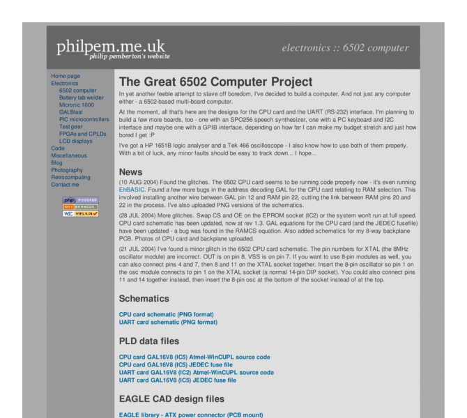

Previewing: The Great 6502 Computer Project Previewing: The Great 6502 Computer Project 
Use the left/right red arrow controls to navigate through this ring - Click the preview image to visit the member site.

The Great 6502 Computer Project - Phil Pemberton's attempt to build a 6502-based computer.
The Great 6502 Computer Project owned by:
 philpem philpem
A member of 6502 Web Ring since 06/02/2008.
|
|